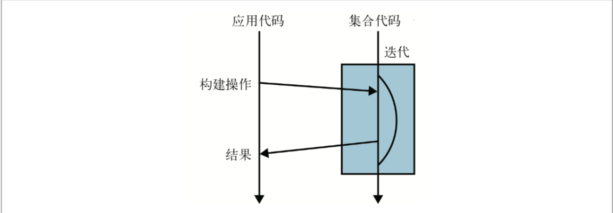

Java 8函数式数据处理
1 流
1.1 流是什么
流是Java 8中新引入的概念，它允许你以声明式方式处理数据集合（通过查询语句来表达，而不是临时编写一个实现）。
举个例子，筛选出价格大于¥50的菜品，并对这些菜品进行排序，最后返回菜品名称的集合，在Java 8之前：
//第一步，筛选
List<Dish> tempList = new ArrayList<>(dishes.size());
for (Dish dish : dishes) {
if (dish.getPriceCent() > 5000) {
tempList.add(dish);
}
}
//第二步，排序
Collections.sort(tempList, new Comparator<Dish>() {
public int compare(Dish d1, Dish d2) {
return d1.getPriceCent() - d2.getPriceCent();
}
});
//第三步，返回名称集合
List<String> result = new ArrayList<>(tempList.size())
for (Dish dish : tempList) {
result.add(dish.getName());
}
List<String> result = dishes.stream()
.filter(dish -> dish.getPriceCent() > 5000)
.sorted(comparing(Dish::getPriceCent))
.map(Dish::getName)
.collect(toList());
流式方法的好处：
- 代码是以声明性方式写的，说明想要完成什么，而不是如何实现一个操作；
- 把几个基本操作链接起来，用以表达复杂的数据操作流水线，使代码清晰可读。
使用Java 8的Stream API可以写出这样的代码：
- 声明性——更简洁 ，更易读
- 可复合——更灵活
- 可并行——性能更好
1.2 流简介
1.2.1 概念和术语
Java 8中的集合支持一个新的stream方法，它会返回一个流，当然也有很多其他方法，比如利用数值范围或者I/O资源也可以生成流元素。
定义：从支持数据处理操作的源生成得元素序列。
关键概念：
| 术语 | 说明 |
|---|---|
| 元素序列 | 类似集合，流提供一个接口，可以访问特定元素类型的一组有序值。集合讲的是数据，流讲的是计算。 |
| 源 | 流会使用一个提供数据的源，比如集合、数组或者是I/O. 从有序集合生成流时会保留原有的序列。 |
| 数据处理操作 | 流的数据处理功能类似于数据库的操作，以及函数式编程语言中的常用操作，如filter、map、reduce、find、match、sort等。流操作可以顺序执行，也可以并行执行。 |
| 流水线 | 很多的流操作本身会返回一个流，这样多个操作就可以链接起来，形成一个流水线。 |
| 内部迭代 | 和使用迭代器进行显示迭代的集合不同，流的迭代操作是在背后进行的。 |
1.2.2 外部迭代与内部迭代
使用Collection接口需要用户自己去做迭代，称为外部迭代。
使用Stream进行的迭代是内部迭代，Stream已经帮你把迭代做了，你只需要告诉它你需要干什么就可以了。
外部迭代：

内部迭代： 
1.3 常见的流操作
1.3.1 collect(toList)
collect(toList)方法由Stream里的值生成一个列表。of方法可以生成一个流对象。
1.3.2 map
map操作可以将一个流中的一种值转换成另一种类型的值，生成一个新的流(一对一映射)。比如，将一个集合中的字符串全部转换成大写。
List<String> upperCaseList = Stream.of("talk", "is", "cheap", ",", "show", "me", "the", "code")
.map(string -> string.toUpperCase())
.collect(Collectors.toList());
/*
output:
[TALK,IS,CHEAP,,,SHOW,ME,THE,CODE]
*/

map操作传入的Lambda表达式必须和Function接口的签名一致。
1.3.3 flatMap
flatMap方法使一个流中的每个值都换成另外一个流，然后把所有的流都连接起来成为一个流（笛卡尔乘积）。
//找出两个数组中共同的元素，形成一个集合
Integer[] array1 = {1, 2, 3, 4, 5, 6, 7, 8, 9};
Integer[] array2 = {2, 3, 5, 7, 11};
List<Integer[]> list = Stream
.of(array1)
.flatMap(a1 -> Stream.of(array2).filter(a1::equals).map(a2 -> new Integer[]{a1, a2}))
.collect(Collectors.toList());
/*
output:
[<2, 2>, <3, 3>, <5, 5>, <7, 7>]
*/
flatMap操作接收的Lambda表达式必须与Function接口的签名一致，传入的范型为Function<? super T, ? extends Stream<? extends R>>.
1.3.4 filter
filter用来遍历数据并选出符合特定条件的元素。比如筛选出一个字符串集合中仅含数字的字符串。
List<String> digitList = Stream.of("a1c", "123", "1q2qw", "0.5")
.filter(string -> TextUtils.isDigitsOnly(string))
.collect(Collectors.toList());
/*
output:
[123]
*/

同样，filter操作传入的Lambda表达式必须和Predicate接口的签名一致。
1.3.5 distinct
disdint方法会返回一个元素各异的流，简单来说，就是滤重（根据元素的hashCode和equals方法）。
List<Integer> distinctList = Stream.of(1, 1, 2, 2, 3, 3, 3, 4)
.distinct()
.collect(Collectors.toList());
/*
output:
[1,2,3,4]
*/
1.3.6 limit
limit(n)会返回一个不超过给定长度的流。如果流是有序的，则最多会返回前n个元素。
List<Integer> list = Stream.of(1, 2, 3, 4, 5, 6, 7)
.limit(3)
.collect(Collectors.toList());
/*
output:
[1,2,3]
*/
1.3.7 skip
skip(n)，会返回扔掉前n个元素的流，如果流中元素不超过n，则会返回一个空的流。
List<Integer> list = Stream.of(1, 2, 3, 4, 5, 6, 7)
.skip(3)
.collect(Collectors.toList());
/*
output:
[4,5,6,7]
*/
1.3.8 min和max
求最小值和求最大值。比如求菜品集合中价格最低和最高的菜。
List<Dish> dishes = ...
Dish max = dishes.stream()
.max(Comparator.comparing(dish -> dish.getPrice))
.get();
Dish min = dishes.stream()
.mix(Comparator.comparing(dish -> dish.getPrice))
.get();
1.3.9 reduce
reduce操作可以从一组值中生成一个值，实际上max和min也是reduce操作，因为太常用，所以被纳入了标准库中。举例，求和：

reduce对应的操作有3个重载的方法：
//无初始值的
Optional<T> reduce(BinaryOperator<T> accumulator);
//等价于
boolean foundAny = false;
T result = null;
for (T element : this stream) {
if (!foundAny) {
foundAny = true;
result = element;
} else {
result = accumulator.apply(result, element);
}
}
return foundAny ? Optional.of(result) : Optional.empty();
//带初始值的
T reduce(T identity, BinaryOperator<T> accumulator);
//等价于
T result = identity;
for (T element : this stream)
result = accumulator.apply(result, element)
return result;
//参数带两个BiFuction的
<U> U reduce(U identity,
BiFunction<U, ? super T, U> accumulator,
BinaryOperator<U> combiner);
//等价于
U result = identity;
for (T element : this stream)
result = accumulator.apply(result, element)
return result;
1.3.10 anyMatch、allMatch和noneMatch
anyMatch判断流中是否至少有一个元素能匹配给定的条件，返回一个boolean值。
boolean hasNullElements = Stream.of("Java", "Python", "C#", null, "Ruby", "Go", "Object C")
.anyMatch(Objects::isNull);
allMatch检查流中流中所有元素是否匹配给定的条件，返回boolean值。
noneMatch检查流中所以元素是否都不匹配给定的条件，返回boolean值。
1.3.11 findAny与findFirst
findAny找到流中任意一个元素(通常是第一个)，返回一个Optional对象，如果流是空的，返回一个值为空的Optional对象，如果找到的元素刚好是空值，则抛出一个NullPointerException。
例： 如果使用的是并行的流，那么findAny方法返回的值则是不确定的，比如下面的例子：List<Integer> array = Arrays.asList(1, 2, 3, 4, 5, 6, 7);
Printer.println(array.parallelStream().findAny().get());
Printer.println(array.parallelStream().findAny().get());
Printer.println(array.parallelStream().findAny().get());
Printer.println(array.parallelStream().findAny().get());
/* 执行多次返回值分别是：
第1次：
5
5
5
5
Process finished with exit code 0
第2次：
4
7
2
6
Process finished with exit code 0
*/
如果想始终找到第一个元素，则应该用findFirst操作，即使是并行的流，页始终能返回第一个元素。
短路求值：对于有些操作，不必处理整个流就能得到结果，就像用 || 连接起来的布尔表达式求值一样，只要提前找到一个为true的值就直接返回。流的操作中，anyMatch、findAny、findFirst都是短路操作，limit也是。
1.4 流与集合
1.4.1 流与集合概念的差异
从前面的例子中可以看到，通过Stream.of(...)方法可以得到一个流对象，看起来数据源似乎是保存在了流对象中，这和集合中保存一组数据很类似。但是，最终从流中获取一个集合，还需要调用collect(toList())方法，由此可见，流并不是集合。
流与集合到底有什么差异呢？举一个形象的例子，存在DVD中的电影，这就是一个集合，因为它包含了电影的全部数据，而网上在线播放的视频则是一个视频流，它只加载你当前观看的这几帧，不用等到所有的数据都加载完了才能看。
所以简单来讲，集合与流之间的差异就在于何时进行计算。集合是内存中的一种数据结构，它包含了数据源的所有值，集合的每个元素都需要先计算出来然后再加入到集合中。而流的元素则是按需计算，仅仅在用户需要的时候才会提取值，这是一种生产者—消费者的关系，只有消费者要求的时候才会去计算值。
1.4.2 流只能遍历一次
和迭代器类似，流只能遍历一次，遍历完成之后，这个流就已经被消费掉了。如果想再次遍历，需从数据源重新获取一个流（如果数据源是可重复的比如集合，这会很容易，但如果像I/O这种的话，就会很麻烦）。
重复消费一个流会抛出IllegalArgumentException，表示流已经被操作，或者关闭。
List<String> firms = Arrays.asList("Google", "AT&T", "Amazon", "Facebook", "Oracle", "MicroSoft");
Stream<String> stream = Stream.of(firms);
stream.forEach(System.out::println);
stream.forEach(System.out::println);
1.5 流的构建
1.5.1 数值流
在有些流的操作中，流中的元素如果是数值，会不可避免的产生装箱和拆箱的操作，比如，对菜品的价格求和：
这段代码中，map操作会生成一个Stream1.5.1.1 原始类型流特化
Java 8中引入的原始类型流特化流有3个：IntStream、LongStream和DoubleStream，分别将流的元素特化为对应的基础类型。相应的这些流中也多了一些常用的数值操作，比如sum, average, max, min等。
将流转化成特定的数值流常用的操作是map，对应的，map操作也有几个特定的方法，mapToInt、mapToLong、mapToDouble。比如上面对菜品价格求和的操作，就可以用IntStream来做：
有时候，也会有将数值流转回对象流的需求，这时候只需要将基础元素进行装箱操作就可以，使用的操作是boxed。
IntStream intSream = dishes.stream()
.mapToInt(Dish::getPrice);
Stream<Integer> stream = intStream.boxed();
上面讲findAny和findFirst操作的时候，提到了Optional对象，类似的，Optional类也对数值的基础类型进行了特化，有IntOptitonal、LongOptional和DoubleOptional三个类。
1.5.1.2 数值范围
Java 8引入了两个可以用于InStream和LongStream的静态方法，range和rangeClose。区别是range不包含结束值，rangeClosed包含结束值。
IntStream intStream = IntStream.range(1, 10);
int[] array = intStream.toArray();
Printer.print(array);
/*
output:
[1,2,3,4,5,6,7,8,9]
*/
IntStream intStream = IntStream.rangeClosed(1, 10);
int[] array = intStream.toArray();
Printer.print(array);
/*
output:
[1,2,3,4,5,6,7,8,9,10]
1.5.2 构建流的几种方式
1.5.2.1 由值创建流
使用Stream.of(T t ...)方法可以创建出一个流，Stream.empty()可以创建一个没有元素的流：
Stream<String> stringStream = Stream.of("Apple", "MicroSoft", "Google", "Facebook", "Amazon");
Stream<String> emptyStream = Stream.empty();
1.5.2.2 由数组创建流
Arrays.stream可以从数组创建一个流，参数是一个数组。
String[] stringArray = {"Apple", "MicroSoft", "Google", "Facebook", "Amazon"};
int[] intArray = {0, 1, 1, 2, 3, 5, 8, 13, 21};
Stream<String> stringStream = Arrays.stream(stringArray);
IntStream intStream = Arrays.stream(intArray);
Stream<Integer> integerStream = Arrays.stream(intArray).boxed();
1.5.2.3 由集合生成流
Java的Collection接口中，引入了stream()和parallelStream()两个默认方法，可以生成流。
String[] stringArray = {"Apple", "MicroSoft", "Google", "Facebook", "Amazon"};
List<String> list = Arrays.asList(stringArray);
Stream<String> stream = list.stream();
Stream<String> parallelStream = list.parallelStream();
1.5.2.4 由文件生成流
Java 8的NIO API中，很多操作都可以返回一个流。比如，Files.lines就会根据文件内容返回一个流。
try {
Stream<String> lines = Files.lines(Paths.get(".gitignore"), Charset.forName("utf-8"))
.flatMap(line -> Arrays.stream(line.split(" ")));
lines.forEach(word -> Printer.println(word));
} catch (IOException e) {
e.printStackTrace();
}
1.5.2.5 由函数生成流：创建无限流
Stream API中提供了2个静态方法来从方法中生成流：Stream.iterate和Stream.generate，这2个方法都可以用来创建无限流，只要不结束，可以一直算下去。
iterate
iterate方法有两个重载的方法：
//有结束条件的
public static<T> Stream<T> iterate(T seed, Predicate<? super T> hasNext, UnaryOperator<T> next)
例如，生成一个斐波那契数列：
Stream.iterate(new int[]{0, 1}, t -> new int[] {t[1], t[0] + t[1]})
.map(t -> t[0])
.limit(20)
.forEach(Printer::println);
generate
和iterate方法类似，generate也生成一个无限流。
generate方法的参数是一个Supplier，它可以是无状态的，也可以是有状态的。
无状态的Supplier，不会记录上一个状态，比如生成随机数，
有状态的Supplier还可以是有状态的，它会记录前一个Supplier的状态（可以是值，属性等），比如还是生成一个斐波那契数列，在构建每一个元素时，都改变了supplier的属性：IntSupplier supplier = new IntSupplier() {
private int pre = 0;
private int cur = 1;
@Override
public int getAsInt() {
int oldPre = pre;
int oldCur = cur;
this.pre = cur;
this.cur = oldPre + oldCur;
return oldPre;
}
};
IntStream.generate(supplier)
.limit(20)
.forEach(Printer::println);
Author: Ivan J. Lee Date : 2017-12-27 23:56